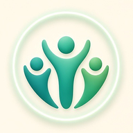
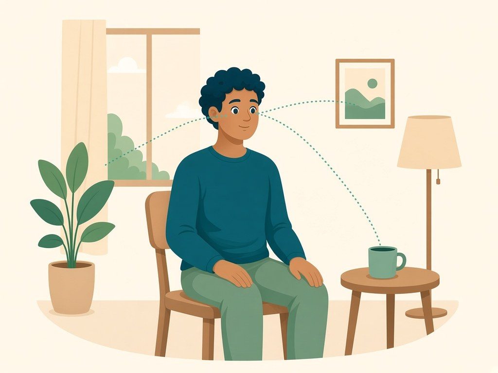
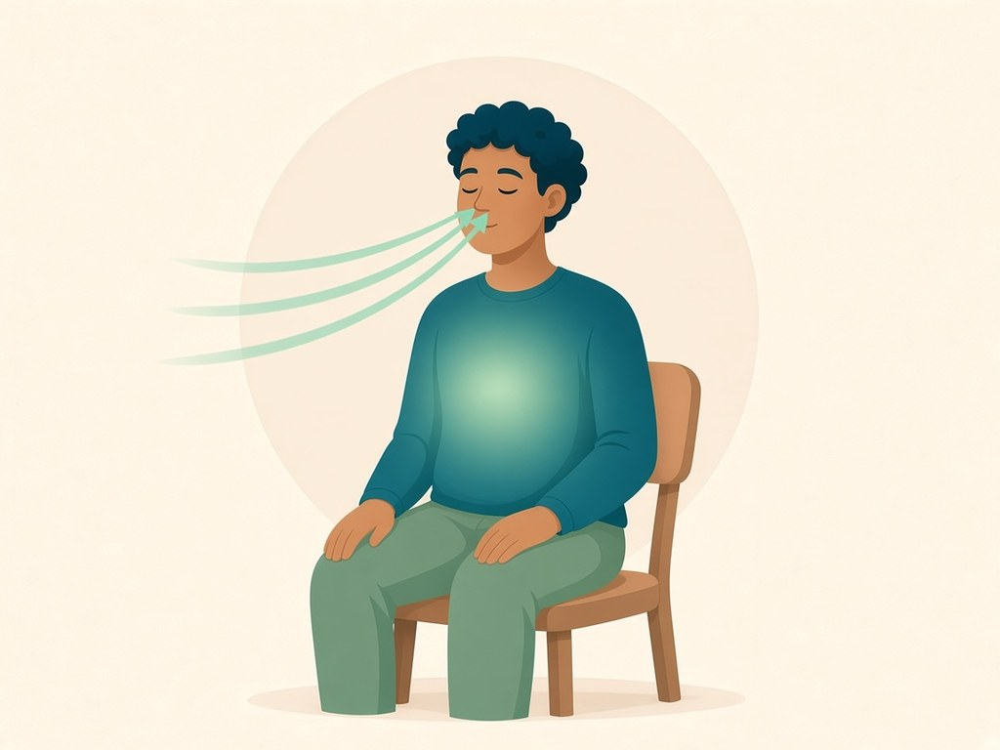

Free · Australian · No sign-in
Support for your recovery journey
HomeCircle is a free Australian recovery support app, and this website brings its no-account tools to your browser: find AA and NA meetings and add a reminder, breathe along with a guide, read plain-language guides and the 12 Steps, keep a day count and journal in your browser, and chat with Kai.
Everything here is free. No accounts, no cookies, no ads, no trackers and no analytics. Anything you save stays in this browser.

You're not alone.
What you can do here

Find a meeting
AA and NA meetings across Australia. Search by suburb, postcode and day.

Breathe now
An animated breathing guide: box, 4-7-8 or a slow out-breath.

Library
Guides, breathing, meditation, body and fellowships.

The 12 Steps
Plain-language notes on what each step is about, with a link to AA's own wording on aa.org.
Your circle
A day counter and a private journal, kept only in this browser.

Helplines
000, Lifeline and every helpline in the app, plus lines in your state.

Meet Kai, your recovery buddy
Kai is the round button in the corner of every page. Tell Kai how you're feeling and it can suggest a breathing practice, a short meditation or a walk, or point you to a meeting or a helpline. Replies are written in this browser from saved rules. No network and no AI service. Kai isn't AI, and isn't a person, counsellor, doctor or sponsor. Nothing you type leaves your browser.
Upcoming events
Conventions, rallies, round-ups, unity days and service events from the fellowships' own event pages, soonest first. Each one links to its official page.
HomeCircle is independent and isn't affiliated with or endorsed by Alcoholics Anonymous or Narcotics Anonymous. We only list events posted on their official pages and don't run or check them. Dates and details can change, so always check the official page.
- 7Nov 2026
Logan Area Trivia Night
7 Nov 2026 · Bethania, QLD · NA
Listed by Narcotics Anonymous Australia. Check the official page for times and details.
- 11Nov 2026
Bacchus Marsh 50 Year Anniversary
11 Nov 2026 · Bacchus Marsh, VIC · AA
Listed by Alcoholics Anonymous Australia. Check the official page for times and details.
- 11Nov 2026
Eden AA group 50th Anniversary meeting
11 Nov 2026 · Eden, NSW · AA
Listed by Alcoholics Anonymous Australia. Check the official page for times and details.
- 13Nov 2026
Retreat to the Pines, Tuross Head
13 Nov 2026 to 15 Nov 2026 · Tuross Head, NSW · NA
Listed by Moruya NA. Check the official page for times and details.
- 14Nov 2026
Love & Service Workshop
14 Nov 2026 · Wantirna South, VIC · AA
Listed by AA Area C Southern Region. Check the official page for times and details.
- 14Nov 2026
Central Coast Unity Day
14 Nov 2026 · Green Point, NSW · NA
Listed by Narcotics Anonymous Australia. Check the official page for times and details.
- 14Nov 2026
Australian Regional Service Committee (ARSC) meeting
14 Nov 2026 to 15 Nov 2026 · North Adelaide, SA · NA
Listed by Narcotics Anonymous Australia. Check the official page for times and details.
- 20Nov 2026
“I Am a Miracle” Sobriety Sisters AA Women’s Retreat 2026
20 Nov 2026 to 22 Nov 2026 · Mapleton, QLD · AA
Listed by Sobriety Sisters Committee. Check the official page for times and details.
- 20Nov 2026
Sydney Combined Area Women’s Retreat
20 Nov 2026 to 22 Nov 2026 · Royal National Park, NSW · NA
Listed by NA Women Sydney Combined Area. Check the official page for times and details.
- 21Nov 2026
South Australian 12 Step Conference
21 Nov 2026 · Belair, SA · AA
Listed by Alcoholics Anonymous Australia. Check the official page for times and details.
- 21Nov 2026
Many Voices One Message: Blue Mountains & Central West Unity Day
21 Nov 2026 · Lawson, NSW · NA
Listed by NA Blue Mountains & Central West Area. Check the official page for times and details.
- 21Nov 2026
Eastern Unity Day 2026
21 Nov 2026 · Belgrave, VIC · NA
Listed by Narcotics Anonymous Australia. Check the official page for times and details.
- 22Nov 2026
Northern Australia Service Area Local Service Conference
22 Nov 2026 · Northern Australia Area, QLD · NA
Listed by NA Northern Australia Service Area. Check the official page for times and details.
- 26Nov 2026
Springvale Serenity 7th Anniversary
26 Nov 2026 · Springvale, VIC · NA
Listed by Narcotics Anonymous Australia. Check the official page for times and details.
- 27Nov 2026
Port Hughes Rally
27 Nov 2026 to 29 Nov 2026 · Port Hughes, SA · AA
Listed by AA Para District. Check the official page for times and details.
- 27Nov 2026
AA Rally: Cool on Down at Coolendel
27 Nov 2026 to 29 Nov 2026 · Buangla, NSW · AA
Listed by Alcoholics Anonymous Australia. Check the official page for times and details.
- 5Dec 2026
Dinosaur Day, Mornington Peninsula
5 Dec 2026 · Rosebud, VIC · NA
Listed by NA Peninsula Area. Check the official page for times and details.
- 12Dec 2026
Northern Area Unity Day, Sydney
12 Dec 2026 · Cromer, NSW · NA
Listed by NA Northern Area. Check the official page for times and details.
- 31Dec 2026
Sydney Southern Area New Year’s Eve Party
31 Dec 2026 to 1 Jan 2027 · Sydney Park, NSW · NA
Listed by NA Sydney Southern Area. Check the official page for times and details.
- 27Jan 2027
Friends Of Bill Cruise from Brisbane to Airlie Beach
27 Jan 2027 to 31 Jan 2027 · Brisbane, QLD · AA
Listed by AA Ipswich District. Check the official page for times and details.
- 5Feb 2027
Wollongong AA Rally: Sobriety by the Sea 2027
5 Feb 2027 to 7 Feb 2027 · Fairy Meadow, NSW · AA
Listed by Illawarra & South Coast Central Service Office. Check the official page for times and details.
- 26Feb 2027
2027 Newcastle & Districts Rally
26 Feb 2027 to 28 Feb 2027 · Rathmines, NSW · AA
Listed by AA Districts Newcastle and Lower Hunter. Check the official page for times and details.
- 26Feb 2027
Portsea Spiritual Retreat 2027
26 Feb 2027 to 28 Feb 2027 · Portsea, VIC · NA
Listed by Narcotics Anonymous Australia. Check the official page for times and details.
- 12Mar 2027
AA Macarthur Recovery Retreat
12 Mar 2027 to 14 Mar 2027 · Wedderburn, NSW · AA
Listed by AA Macarthur District. Check the official page for times and details.
- 27Mar 2027
AA National Convention 2027
27 Mar 2027 to 29 Mar 2027 · Geelong, VIC · AA
Listed by Host Planning Committee for the AA National Convention 2027. Check the official page for times and details.
- 30Apr 2027
North Eastern Area A Roundup (Cairns)
30 Apr 2027 to 3 May 2027 · Cairns, QLD · AA
Listed by AA North Eastern Region Area A. Check the official page for times and details.
- 14May 2027
Sydney Combined Areas Narcotics Anonymous Convention 2027
14 May 2027 to 16 May 2027 · Marrickville, NSW · NA
Listed by NA Sydney Combined Areas. Check the official page for times and details.
- 28May 2027
Voices of Recovery Women’s Retreat
28 May 2027 to 30 May 2027 · Rathmines, NSW · AA
Listed by Alcoholics Anonymous Australia. Check the official page for times and details.
- 28May 2027
Camp Serenity 2027
28 May 2027 to 30 May 2027 · Natural Bridge, QLD · NA
Listed by Narcotics Anonymous Australia. Check the official page for times and details.
- 12Jun 2027
North Eastern Region Area ‘C’ Founder’s Day Celebration
12 Jun 2027 · North Eastern Region Area C, QLD · AA
Listed by AA Area ‘C’ North Eastern Region. Check the official page for times and details.
- 27Aug 2027
Adelaide Mens Weekend
27 Aug 2027 to 29 Aug 2027 · Belair, SA · AA
Listed by Alcoholics Anonymous Australia. Check the official page for times and details.
- 1Oct 2027
Toowoomba Annual Rally (save the date)
1 Oct 2027 to 4 Oct 2027 · Toowoomba, QLD · AA
Listed by Alcoholics Anonymous Australia. Check the official page for times and details.
- 9Oct 2027
Goulburn Women’s NA Unity Day (hold the date)
9 Oct 2027 · Goulburn, NSW · NA
Listed by Goulburn Women’s NA. Check the official page for times and details.
No upcoming events listed right now
Check the fellowships' own event pages: AA Australia events and NA Australia upcoming events.
Event list checked on 3 Nov 2026.
The HomeCircle app
In the iPhone app
- Meetings near you, with a map.
- A private journal and sober date that stay on your phone.
- Kai, your recovery buddy: built-in templates on your phone for reflection and encouragement. It isn't AI and nothing you type leaves your phone.
- Meeting reminders 2 hours before a meeting starts.
- The same Library, breathing and meditation guides.
Support, not medical care
For any health concern, talk to your GP or a doctor. HomeCircle is support, not medical care.
HomeCircle is independent and isn't affiliated with or endorsed by Alcoholics Anonymous, Narcotics Anonymous, Gamblers Anonymous or Porn Addicts Anonymous.
HomeCircle never reproduces the Big Book or NA literature. We link to the free official pages instead.